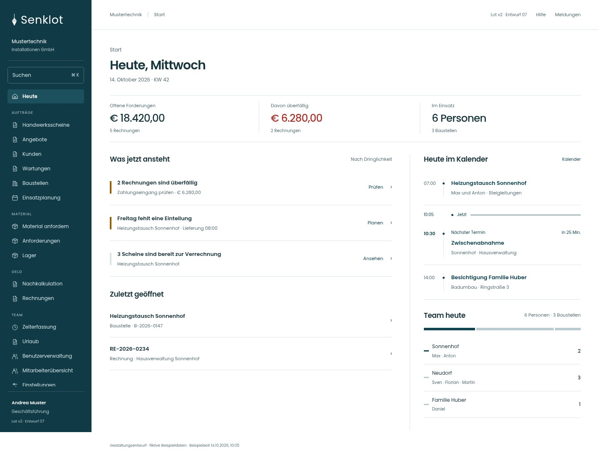
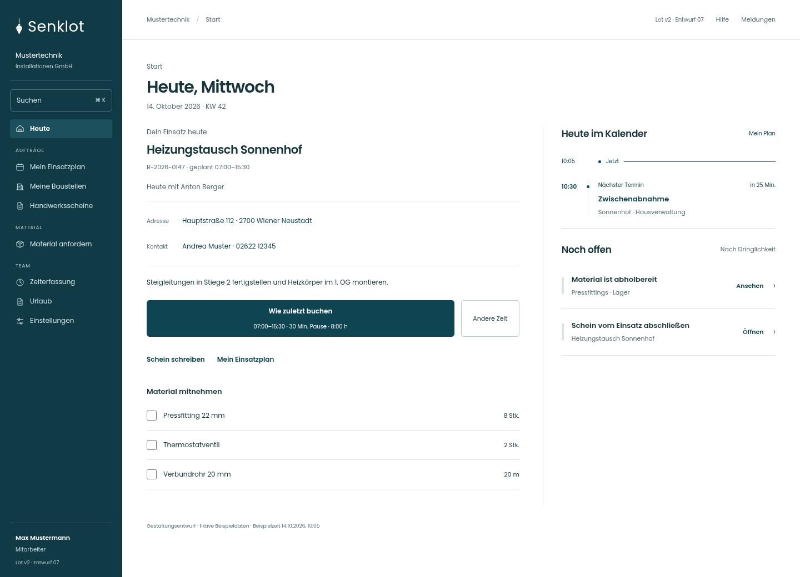
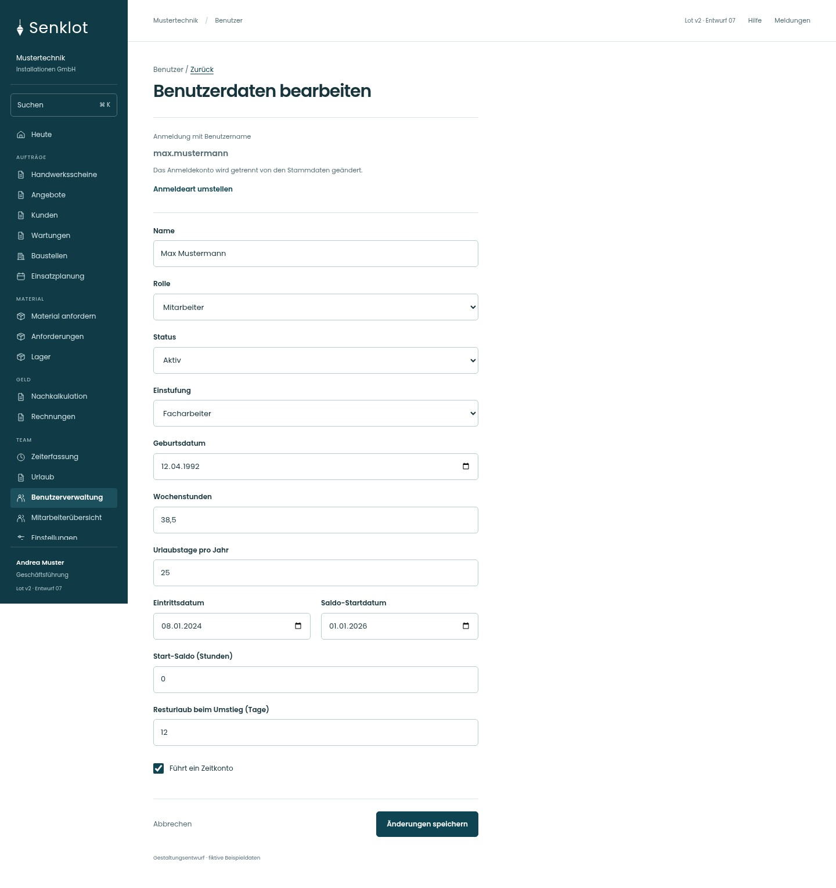

A · Kalender
Vorhandene Kalenderachse mit Jetzt-Markierung und hervorgehobenem nächsten Termin. Teamdaten als Textzeilen.
B · Kalender und Teamband
Gleicher Inhalt wie A; zusätzlich ein schmales Band für die Einsatzverteilung nach Baustellen.

C · Empfohlene Balance
Kalender und Teamband, stärkere Aktionsbeschriftung, keine doppelte Personenkennzahl. Mobil steht der Kalender vor Zuletzt geöffnet.

Monteur · Arbeitswege erhalten
Einsatz, Adresse, Anruf, letzte Zeitvorlage, Schein und Materialübernahme direkt erreichbar. Nur eigene Termine.

Rechnung · Aktionen sichtbar
Zahlung und PDF direkt am Beleg. Zustandsabhängige Mahn- und Korrekturaktionen bleiben erreichbar.

Benutzer · Zugang geschützt
Anmeldekennung als nicht direkt bearbeitbare Angabe; Konto-Umstellung ist ein separater geschützter Ablauf.

Vollseitenbilder zeigen die untere Navigation am Seitenende; in der Vorschau bleibt sie am Bildschirmrand. Weitere verlinkte Ansichten stammen aus Entwurf 06.